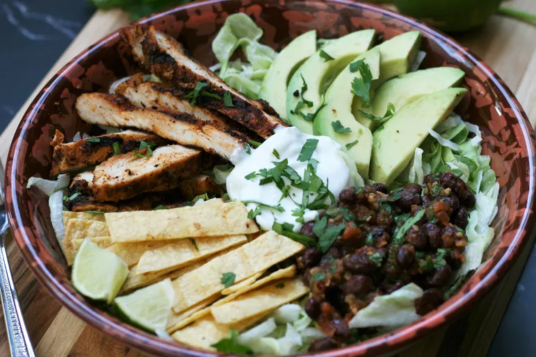

Home
Chicken Breast recipe

Grilled chicken greast
Grilled chicken is a staple of summer cookouts and barbecues. It's easy to make, healthy, and delicious. This
recipe is simple and versatile, so you can use it as a base and add your favorite seasonings and marinades to
savoury chicken breast.
Ingredients
- Chicken breast
- Garlic
- Spices
- Paprika
- Black pepper
- Salt
Steps
- Marinate:In a bowl , combine olive oil, lemon juice , minced garlic,salt,pepper and your choice of herbs and
spices add the chicken pices and coat them evenly
. Let the chicken marinate for at least 30 minutes, or overnight for best results.
-
Preheat the grill: Preheat your grill to medium-high heat. If you're using a gas grill, preheat it to 400
degrees F (200 degrees C). If you're using a charcoal grill, let the coals burn until they're covered with a white ash.
-
Grill the chicken: Place the chicken on the grill and cook for 6-7 minutes per side, or until the internal
temperature reaches 165 degrees F (75 degrees C). The chicken should be golden brown and have grill marks on
both sides.
-
Rest: Remove the chicken from the grill and let it rest for 5 minutes before serving. This will allow the
juices to redistribute and the chicken to finish cooking.
-
Serve: Slice the chicken and serve it with your favorite side dishes, such as grilled vegetables, rice, or
salad.